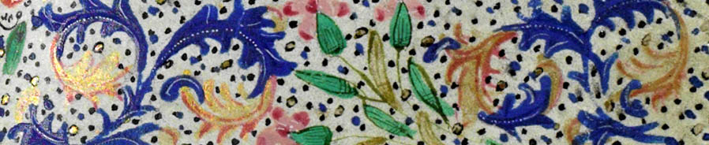

Relation Extraction System: SRED
The SRED (Relation Extraction on Documents) project is part of the Human History Project. SRED provides a state-of-the-art relation extraction system including document processing, document extraction, and extraction editing tools. The current version supports relation extraction on documents in English.
Process file